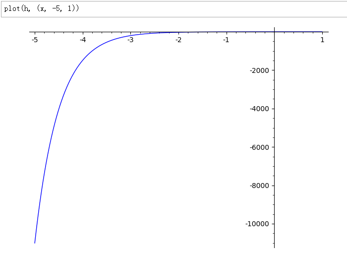
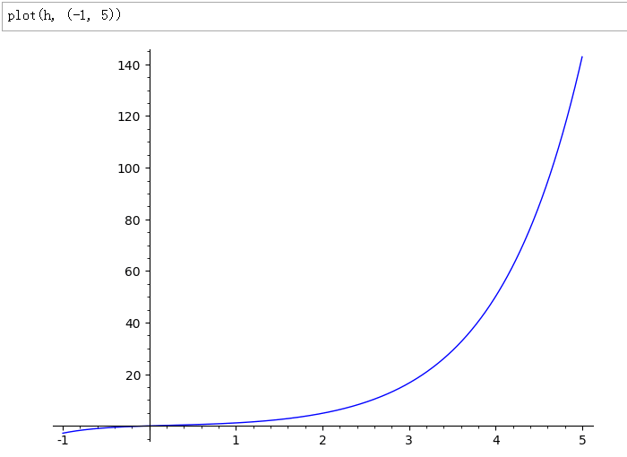

考虑到线性微分方程组的求解可以利用“Maple”或“Mathematica”等计算机符号系统，我们在第二版中省略了第一版中第六章第四节关于算子法和拉式变换法的介绍。
先补充前一篇当中忘了写的一段，也算脑洞。
就说「纽结」，肯定能在「ℝ4」内解开，但是不见得能在「ℝ3」或「S3」内解开，这就是「短暂的微弱的突破第四个维度」的作用。
一个已经解开的纽结就是平凡的一根线或一个圆圈，按照前一篇提到的使用「狄拉克函数」以「概率论」话语体系炮制异端「纽结力学」的构思，解开了「疙瘩」或者系上，就是「质量」凭空消失或出现。
这又涉及到了另外一个话题，也是市面上充沛的科幻作品当中经常出现的「真空零点能」，之前扯淡的时候（链接）揣测过不能凭空提取但是可以「暂借」。
也就是说，「质量凭空消失」可以有一种唯物主义解释：已知有「抵押物」存在，就可以申请固定利息的「贷款」，然后「质能转换」了再连本带利还回去。而剩下的能量当然都是自己的，并且没有产生唯物主义影响。
但是能够引发「金融」行为的这个「动机」，就纯粹属于唯心主义因素了，无论「意识」是否「意识到」自己都在想了些了什么，并理解发生了什么之间存在着因果关系，虽然本位面当前似乎不行（存疑）。
不过我设定卡壳世界的「法师」都明确知道自己的目的，是以自由意志发挥主观能动性。那么对纽结的「拆疙瘩」行为，就可以结合第一篇设定当中提到的「推搡魔网」字眼理解。
那么常见奇幻乃至仙侠背景当中各种「蝗虫流仙人」疯狂掠夺位面资源，就能够在这个脑洞的前提下进行解释。既然「抵押物」又不是自己的，按照文艺精品当中各种「仙人」们的一贯形象，慷他人之慨何乐而不为呢。
与此同时，还得结合前面提到的「灵力」「精神力」的设定，既然将「动机」付诸实践也需要「代价」，那么当然不能为所欲为。而作为整体的唯物主义位面，是否会按照一定速率补充「元素」，并且产生了「世界意识」（未必有人格）以负反馈方式（比方说阻尼运动那样的，「法术」用的越多越快就越费劲）限制「仙人」贪得无厌，都值得商榷嘛。
于是常见奇幻背景当中的超自然力量就可以获得顺理成章的解释，而依赖「虚空造物」的霍伊尔稳恒宇宙假说也可以照搬到「卡壳世界」。顺便，霍伊尔认为制造物质的能量，是宇宙「膨胀得稍微慢一些」所节省出来的，仅从学术角度判断可以自洽。至于为啥会「慢」一些，没准背后还有个「宇观阻尼定律」什么的。
继续，若是纽结仍然存在但是「疙瘩」数目或类型发生了变化，那么就是「元素」变了。这奇幻版「真·炼金术」可以类比本位面放射性物质衰变或者以反应堆「人造元素」。而「聚变」「裂变」涉及到纽结的合并与分割。参考本位面常识，这种「法术」会释放或吸收能量喽。
再次强调，这里用「唯物主义」术语解释只是行文简洁的缘故，我仍然设定「卡壳世界」是个纯粹数学结构的产物，包括「灵气」「精神力」在内的各种「守恒」定律，也都是数学结构之间的「运算」。
如果要通俗的解释，可以参考「一团乱麻耳机线」相关内容，细节略。就说本位面三维空间当中纽结都有自发的「紧密团结」现象，于是在那「卡壳世界」当中自发的偶然的孤立的片面的「涨落」到四维空间系「疙瘩」再缩回来，于是质量就「凭空」出现了也。至于疙瘩有几个都是啥类型，可以参考前几篇当中提到的「随机性」，越复杂的「原子」生成概率就越低。
所以，暂时可以设定「世界意识」倾向于「创造」物质，而「个体意识」当然是在「消费」物质喽。哪怕用本位面官方钦定唯物主义教材当中提到的生态系统类比也知道，总有生产者、消费者、分解者。于是作为奇幻背景的世界观，可以在「本源」层次达成平衡，不至于变成市面上充沛的以「后台服务器修改数据」推动情节发展的伪装成文艺作品的「游戏攻略兼人民币玩家作弊指南」。
顺便，提到「涨落」但是没使用「量子」前缀，有两个原因。一方面是由于设定的年代只有「古典」数学物理内容，另一方面是科技昌明民智大开的当代「世风日下人心不古」，但凡人民群众「听都没听说过的新鲜名词」都会被相关「学阀」包装成金融衍生品并指使「得意门生」到处推销以诈骗圈钱。
目前的问题在于，虽然通过异端「纽结力学」的设定可以自圆其说，但是正统的「质点力学」反而没想好该怎么处理。
在《煎蛋段子区评论〔№4156995〕政治挂帅与学牛强国》当中已经提到了丁同仁李承治编《常微分方程教程》的序言部分所蕴涵的充沛政治和意识形态内容以及所体现的从1990到2004年间京师大学堂数学系内部政治和意识形态斗争旧动向，这里不再重复。
不过呢，序言当中还有点技术细节内容：
按照《〈恶补记〉流水账》早期的预告，饥寒交迫的孤苦伶仃可怜废柴草根文盲矬胖老穷光棍汉我，惦记着使用开源软件取代兲朝特色教育体制当中的商业软件。在《〈设定集〉注释》当中也提到了，印象里1998年开始投入教学实践的工科教材当中就删掉了一堆手算技巧，改为“Matlab”相关内容。于是乎，二十年来我中华兲朝上国全面深化教育体制改革的过程中，有极大充沛的预算都输送给境外关系户上贡了也。
面向数学专业的这本教材当中删掉手算技巧却没出现计算机相关内容，那应该是出于考核的目的，计算题可以作弊，证明题若要「复制并成功」就比较麻烦了。于是，准备运用“SageMath”试着做点计算题写出示例代码，若是不如“Maple”或“Mathematica”好使则简单找找原因和替代方案。今后其它相关内容涉及到“Matlab”的场合，会换成“GNU Octave”，不再特意强调。
而这本教材本身内容体现了署名中「编」字的特色，不同场合混合使用了牛顿记号（ẋ）、拉格朗日记号（y′）和莱布尼茨记号（dv/dt），可见英法德学阀「利益均沾」的影响。虽然看起来有点眼花缭乱吧，但也不是不能接受，毕竟本位面历史上不同现实问题就是被不同国家和地区的数学工作者解决的，所用伎俩通常依赖于相关学阀的思路。那么从学术史角度出发，保留原貌也算是比较妥当。
若是口口声声「四个意识」一边倒投靠即将脱欧入美奔向百善の新世界的「南不列颠及北爱尔兰联合王国」或坚持留守万恶的旧大陆，又会引发新一轮政治和意识形态斗争，教学工作会遭到庙堂狼牙棒与江湖色目混混鸡鸣狗盗之徒的强烈干扰。
政治和意识形态斗争没有完，这些知识得教给下一代，怎么教？和平中教不成那就动荡中教，搞不好就得血雨腥风了。学生怎么办？只有天知道。
但是呢，我中华兲朝上国开放的大门越开越大，又不能将全球学阀的影响拒之门外。因此结合钦定学霸推荐的把英语重要性置于专业课之上的人生规划，通常童年才俊们在紧张的学习生活之余，就会开始主动加班加点与国际接轨，开始按照知乎首页推荐当中出现的书目，数学英语「两手抓两手都要硬」了也。
这里顺便介绍（不是推销）一本《闭嘴，学习！多磕头少说话专用微分方程教程》（Shut Up And Study !!! «Differential Equations FOR DUMMIES» by Steven Holzner, PhD）注：dummy ['dʌmɪ] n. 傀儡，哑巴，假人。内容还是中规中矩的，英文措辞也不算太过艰险，想必童年才俊均可以轻松理解。
其中主要使用了业内通用的莱布尼茨记号，偶尔出现拉格朗日记号，但是没看见牛顿记号。各位童年才俊在校内掺和「学生会」政治和意识形态斗争的时候人缘好情商高的寻找友邦外援，可以参考这个表态。
补充，在“SageMath”的帮助文档里面就有充沛的实例内容，这里仅举一例以示实践。二阶线性初值问题「y′′+y′-2y=2x, y(0)=0, y′(0)=0」的符号运算结果（调用“Maxima”）以及绘图（请注意「初心」两侧比例不同）：


补充，使用原版“Maxima”解方程并绘图：
注意绘图命令当中的「rhs」，这是LISP函数返回方程中等号右侧的表达式。与其它「友善」的程序比起来，使用原版Maxima还是需要一些LISP基础的。